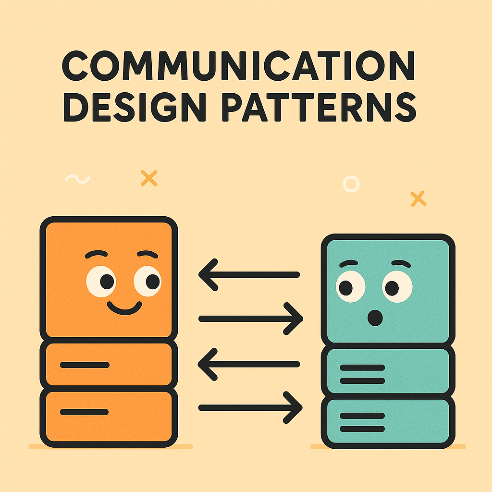
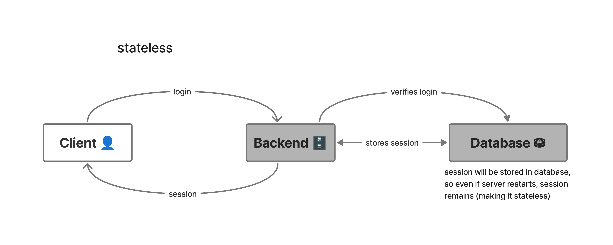

Table of Contents:
- Introduction
- Request Response
- Synchronous vs Asynchronous
- Push
- Polling (Short Polling)
- Long Polling
- Server Sent Events (SSE)
- Publish Subscribe (Pub/Sub)
- Stateful vs Stateless
- Conclusion
>Introduction
Hello World! In this article, we will learn how about some of the communication design patterns/concepts that are used in backend and you may have even heard about them. You will explore how there are multiple ways a client can communicate with the server and vise versa.

We will start from some very basic and well known foundational concepts like “Request-Response” and move to some architectural concepts like “Stateful vs Stateless”. I will try to keep everything to the point and simple without loosing any meaning, I hope you learn something from this article.
>Request Response
(The Classic Conversation)
This is perhaps one of the most fundamental and widely used communication model in backend systems, or in web in general. It works like an interaction between parties (i.e. the client & the server), where one party sends request and other responds/serves that particular request. Think of it like a conversation between you and your friend, you ask the question, and your friend responds to that with an answer.
Let's break down the typical flow:
- Client initiates a Request.
- Server receives, parses and processes that request.
- After server has done processing, it generates a response. this response generally includes:
- Status: whether request was successful or not (e.g.,
200 OK,404 Not Found,500 Internal Server Error).
- Status: whether request was successful or not (e.g.,
- Client receives the response and acts accordingly.
Anatomy:
The request and response structure is predefined by both parties. It is defined by a specific protocol and format that will be used.
Example:
HTTP Request:
GET /index.html HTTP/1.1 Host: www.example.com User-Agent: Mozilla/5.0 Accept: text/html (empty line indicating end of headers)
HTTP Response:
HTTP/1.1 200 OK Content-Type: text/html Content-Length: 1234 (empty line indicating end of headers) <!DOCTYPE html> <html> <head><title>Example Page</title></head> <body><h1>Hello World!</h1></body> </html>
Where it is used and works:
- For most client-initiated interactions on web.
- HTTP, DNS, SSH.
- SQL & Databases.
- API’s like REST, GraphQL etc.
Where it doesn’t work and falls flat:
- Chatty and resource Intensive services where continuous updates are expected.
- Not Suitable for Large Requests.
- Where client needs to wait, or may disconnect.
>Synchronous vs Asynchronous
(Wait or Don't Wait)
While Request-Response is about how two parties interact, Synchronous vs Asynchronous is about how they interact and how they handle the “waiting”.
Synchronous Communication:
In Synchronous, the client sends a request and waits for the response, the server may process and respond in this timeframe the client is essentially frozen and cannot proceed till it gets the response back. Its like you calling someone on phone, you cannot start speaking or acting until they pick up and respond.
Let's break down the work flow:
- Client sends a request and waits.
- The client's executing thread or process is blocked, unable to perform other tasks until the response arrives.
- Server Responds, then Client resumes.
- Both parties are tightly coupled in their interaction, meaning the client's progress is directly dependent on the server's speed.
Where to use:
- Simple basic Request-Response.
- Where immediate feedback is expected.
- Sequential Dependencies (Where one operation depends on previous one’s completion).
Asynchronous Communication:
Now this is obviously opposite of the Synchronous communication, in Asynchronous communication the client sends request and does not wait/freeze. The client can do other work while the request is processed by server and served to it. Once server is done processing the request and sends a response, the client is notified (via a callback, a promise, or a message queue event). Think of this like you sending an email to your friend, you can send email and do other work without relying on their response.
Let's break down the work flow:
- Client sends a request and does NOT wait.
- Client can work parallelly, as it is not relying on response.
- Server processes client’s request and sends a response.
- Client receives.
- This decoupling allows for greater concurrency and efficiency, as neither party has to wait on the other's immediate completion.
Where to use:
- Scalable applications where responsiveness is needed.
- Long running operations where wait is not viable.
- Large data processing.
NOTE: In Traditional Request-Response (like HTTP), “client” has the Synchronicity property, as client need to wait. Of course modern clients are asynchronous and can do other work as Modern client-side development heavily relies on asynchronous HTTP requests.
>Push
(Server Speaks)
If a client wants real time notification from backend without needing to initiate requests time to time, a architecture where server sends data directly without any request. In Push, the client is not the initiator, as soon as bidirectional connection is established the server can directly send data. Its like when mailman delivers your mail on doorstep as soon as it arrives at the post office without needing your intervention.
Inner working:
- Client establishes connection (as connection is needed).
- Server waits for a event or new information.
- Server initiates communication based on certain event.
- Client receives.
Scenarios Where Push is Essential:
- Real-time Notifications.
- Live Data Feeds.
- Chat applications.
>Polling (Short Polling)
(Are We There Yet?)
After understanding “Push” mechanism, it is important to understand its counterpart Polling, which is client initiated.
In Polling (also known as Short Polling), the client periodically sends request to server to check for new data or updates. The server immediately processes the requests and sends back response even if no update is ready yet. The client waits for fixed interval again before sending next request, regardless of whether updates are expected or not. Think of it like this, when someone with less patience in a restaurant keeps asking if his food is ready or not to the waiters, and if its not ready they will respond with “no”, then he asks again after 5 minutes for updates.
How it works:
- Client sends a request.
- Server immediately responds with a “handle id”.
- Server continues to process that request.
- Client keeps requesting periodically using that “handle id” to check for status.
- Once, Response is ready, server sends it on a Request.
Where to use it:
- When real-time updates aren't critical, and a slight delay is acceptable (e.g., a dashboard that refreshes every few minutes)
- Periodic System Status Checks.
- System where clients can disconnect, reconnect and can check back on same status updates (using the “handle id”).
Some Disadvantages:
- Mechanism is too chatty.
- Uses high bandwidth and unnecessary backend resources.
>Long Polling
(Short Polling but patient one)
Having understood the inefficiencies of Short Polling (where its too chatty of a mechanism), Long Polling solves those things. This pattern is an optimized version of polling where client sends request to the server just like polling, but instead of immediately responding with a “no” message if update is not ready, the server waits and DOES NOT reply unless update is ready. Server replies only when response if ready, so this makes the mechanism less chatty, and provide a near real-time experience. If we try to put previous example here too, here the person now has patience and when he asks a waiter if his food ready or not, the waiter says “I will bring the food as soon as its ready”, and the person does not ask again.
NOTE: This is kind of similar to the simple “Request Response” mechanism, but this is kind of different as the client can disconnect if request “handle id” is involved and the Connection Lifetime is also extended. You can say long polling is “better” version of request response.
How it works:
- Client sends a request.
- Server immediately responds with a “handle id”.
- Server continues to process that request.
- Client requests using that “handle id” to check for status.
- Server DOES NOT reply until it has the response ready.
- Client can wait (or even disconnect).
Where to use it:
- Everywhere where “Short Polling” is used.
- Where you may need near real-time updates.
>Server Sent Events (SSE)
(The Server's Live Broadcast)
This is a design pattern that provides a simple, efficient, and standardized way for a server to send a continuous stream of text-based updates to a client over a single, long-lived HTTP connection. Unlike the "client-pull" model of polling, SSE is a native "server-push" technology. It's designed specifically for one-way communication: from the server to the client. This makes it ideal for scenarios where the client primarily needs to receive updates without sending much data back.
How it works:
- Client initiates a request.
- Server sends a special Response: The server responds, but it sends a special
Content-Type: text/event-streamheader. This tells the client's browser that the response body is not a single file, but a continuous stream of events. - Its serves as an unending response stream.
Where to use it:
- Where client wants real time notifications.
- “A user just logged in!”
- “A message is just received”
- Live progress indicators for long-running background tasks.
>Publish Subscribe (Pub/Sub)
(The Bulletin Board)
Moving beyond the polling-based patterns, we arrive at Publish/Subscribe (Pub/Sub), a powerful and highly decoupled messaging pattern. Unlike polling, where clients have to constantly ask for updates, Pub/Sub is a true event-driven, asynchronous mechanism that allows for one-to-many communication.
In Pub/Sub, clients don’t directly communicate. Instead, they they interact with a central messaging service, often called a “Message broker”. This broker acts as an intermediary, managing the flow of information.
This pattern consists of two major roles:
- Publishers: These are the components that publish (or send) messages to a specific named channel, known as a topic. Publishers don't know who, or even if anyone, is listening. They just focus on sending their messages to the topic.
- Subscribers: These are the components that subscribe to a specific topic. They tell the message broker, "I'm interested in any messages sent to this topic." Subscribers receive messages asynchronously as soon as they are published to that topic.
Think of it like a public email newsletter. The publisher writes a new post and sends it to the newsletter service (the broker). The service then distributes it to every single person who has subscribed, without the publisher having to know or care about who those subscribers are.
How it works:
- Publisher produces message/data and publishes to specific topic channels.
- Subscribers listening to specific topic channel will receive message/data when its published on those channels.
- Subscriber doesn’t need to know who the publisher is, and vise versa.
- There is usually a message broker (middleware) or a message queue involved here that will handle the message distribution.
Where to use it:
- Can be used in Decoupled Architectures.
- Scalable Distributed Systems where a single event needs to trigger actions in multiple, separate services.
- Microservices.
>Stateful vs Stateless
(Remember or Forget)
When designing backend communication, one of the most fundamental architectural decisions you must make is whether your system will be stateful or stateless. This distinction determines how a server handles a client's requests and whether it remembers any context from previous interactions. The "state" in this context refers to any data that a server needs to remember about a client's session to handle subsequent requests.
Stateful: In a stateful system, the server retains information or "state" about a client's session across multiple requests. The server remembers previous interactions and uses that stored context to process subsequent requests. This means a client often only needs to provide a small identifier (like a session ID or connection ID) in subsequent requests, and the server retrieves the rest of the context from its memory or a persistent store.
Stateless: In a stateless system, the server treats every single request as an independent and isolated transaction. The server does not store or remember any information from previous requests. Here the client must include all the necessary information (e.g., authentication tokens, session IDs, data payloads) within each request itself. As each request is a self-contained unit.
TCP → Stateful
UDP → Stateless
Which to use?
Can you restart the backend during idle time and the client’s workflow should continue to work? → Stateless
Should client’s information/state be stored for further subsequent requests? → Stateful
Following are two illustrations showing how same scenario can be achieved via both stateful & stateless:
illustration 1:

illustration 2:
Technically here in illustration 2 backend is stateless, but the entire system is still stateful. (because if database dies, state dies)
>Conclusion
So we went through some cool and majorly used design patterns.From the simple, yet powerful, Request-Response model to the highly decoupled Pub/Sub and the real-time efficiency of Server-Sent Events, each pattern is a specialized tool.
The art of backend communication design lies not in mastering one pattern, but in understanding the trade-offs and knowing which tool to use for the job. Choosing between a stateful or stateless architecture, or deciding whether polling is "good enough" versus investing in a push mechanism, fundamentally shapes your application's performance, scalability, and resilience.
I will try to keep updating this article as new stuff comes in my mind, you can also suggest me some topics or if you wish to contribute to this article, feel free to do so through this repository:
>https://github.com/ProgrammerPratik/ProgrammerPratik.github.io/tree/master/articles
Hope you found this article helpful! Thanks for reading have a great day <3